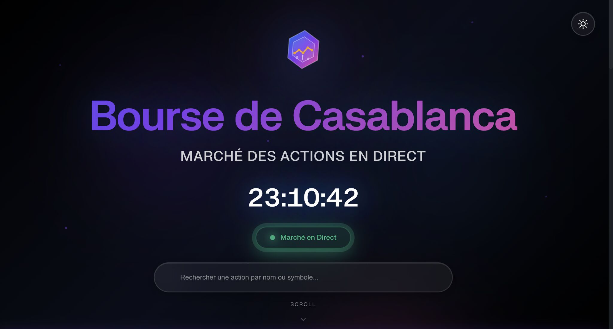
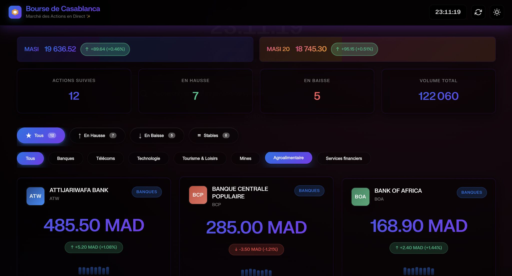
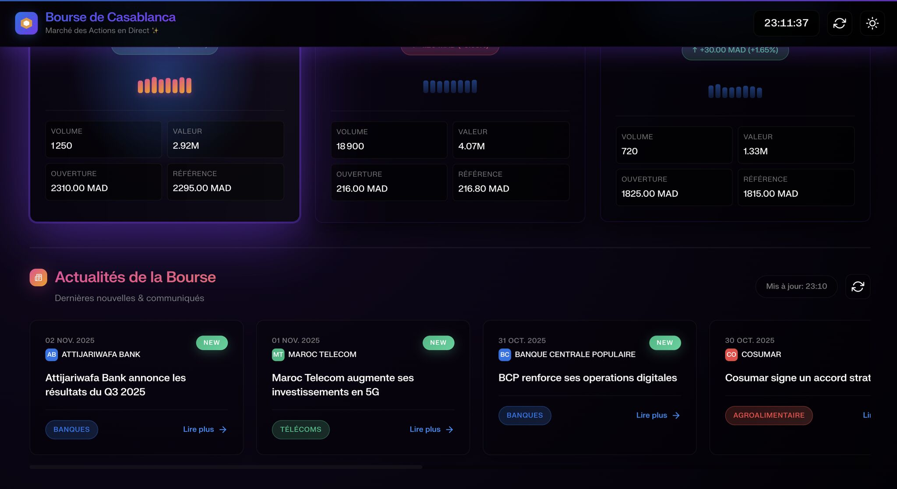

Étudiant en Master Finance & Data Science, je transforme la donnée brute en décisions stratégiques. Passionné par l'application du machine learning aux marchés financiers, je recherche un stage à fort impact où je pourrai mettre mes compétences au service de projets innovants.
Depuis toujours attiré par la finance, j'ai rapidement compris que son avenir résidait dans la donnée. Mon parcours en Master Finance & Data Science est né de cette conviction : allier la rigueur de l'analyse financière à la puissance prédictive des algorithmes pour créer de la valeur.
Aujourd'hui, je conçois et déploie des solutions concrètes, de la modélisation du risque à la détection de fraude, en m'appuyant sur un écosystème technique solide (Python, SQL, Scikit-learn). Mon objectif est de traduire des problématiques complexes en solutions data-driven, performantes et fiables.
Université Hassan II – Casablanca
Specialization in quantitative analysis and financial machine learning
Université Hassan II – Économie et Gestion, Mohammedia
Lycée Tarik Ibnou Ziad – Casablanca
Project : Fraud Detection on Instant Transfers
Certification professionnelle en science des données



Cette application Flask récupère en direct les cours de la Bourse de Casablanca depuis le site officiel grâce à Playwright (automatisation web). Les données extraites (prix, variation, volume) sont mises à jour automatiquement et affichées dans une interface web claire.
Un convertisseur interactif de devises développé avec Flask et JavaScript, permettant de passer d’une monnaie à une autre (MAD, USD, EUR, GBP). L’application génère aussi une tendance fictive des taux de change sur 7 jours, pour illustrer la variation.
Une plateforme de gestion d’investissements boursiers avec système d’authentification, base de données SQL, et tableau de bord personnalisé. Chaque utilisateur peut créer un compte, suivre ses transactions et consulter ses performances.
Une application Streamlit qui prédit si une transaction par carte bancaire est frauduleuse ou non. Elle utilise un modèle de machine learning entraîné sur un dataset de transactions, et permet la saisie manuelle ou le chargement d’un fichier CSV.
Ouvert aux stages PFE, missions freelance ou échanges courts autour de la finance & data. Je réponds sous 12 heures.